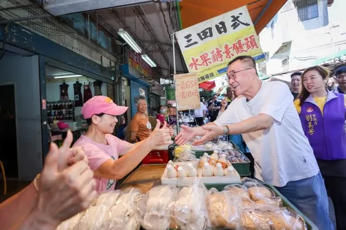
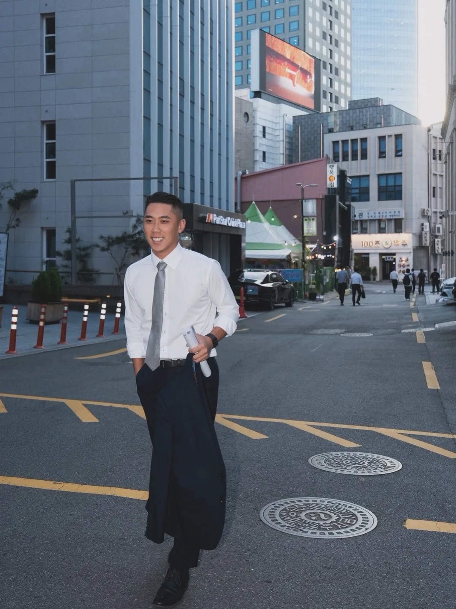
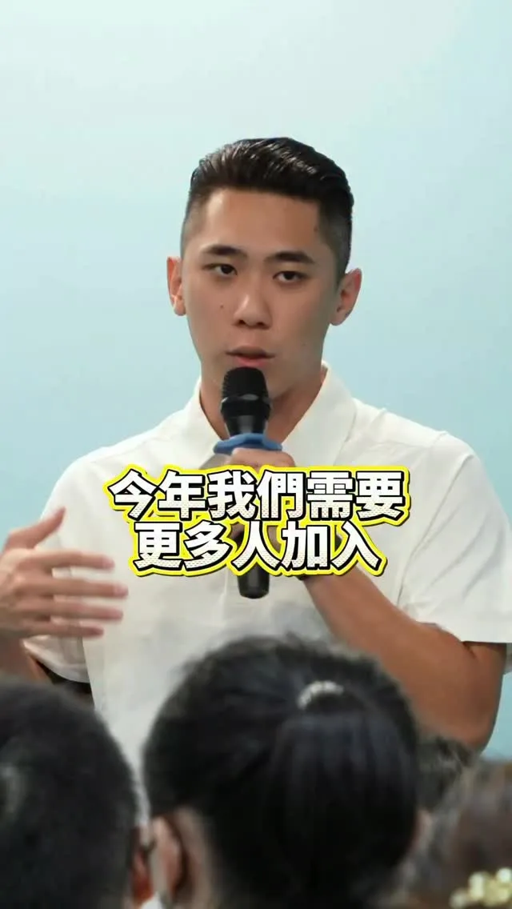
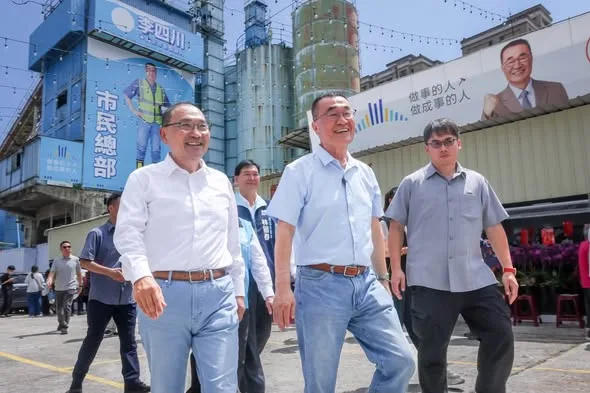
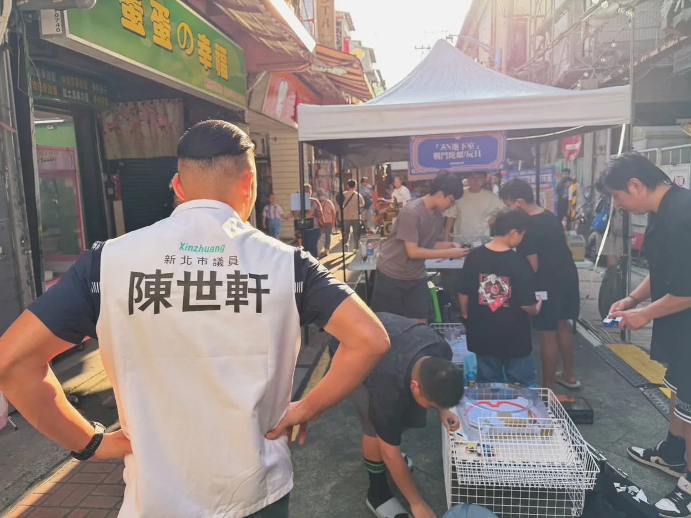

李四川Hammer Lee李四川Hammer-Lee-100051818071280

中秋團圓，佳節愉快。 有一群人，在大家團圓的時候，在崗位上守著大家，一個「圓」字少了一角。 也有很多人還在團圓路上，無法準時抵達。 我提「30 分鐘核心生活圈」，講的就是這件事。 捷運、輕軌，雙北一起規劃，把跨市這段路接順。 交通圓滿了，大家就能早一點下班、早一點回家吃飯。 回家路完整了，就不用等中秋。 祝大家中秋愉快。月餅跟家人分著吃、柚子不要忘，烤肉也要注意安全喔。
Accounts
| 平台 | 帳號 | 已收錄貼文 | 最後更新 |
|---|---|---|---|
| https://www.facebook.com/p/%E6%9D%8E%E5%9B%9B%E5%B7%9DHammer-Lee-100051818071280/ | 128 | 2026-09-25 10:02 | |
| https://www.instagram.com/hammer__lee/ | 120 | 2026-09-24 22:20 | |
| Threads | https://www.threads.com/@hammer__lee | 91 | 2026-09-24 12:40 |
Timeline
顯示 343 / 343 則
中秋團圓，佳節愉快。 有一群人，在大家團圓的時候，在崗位上守著大家，一個「圓」字少了一角。 也有很多人還在團圓路上，無法準時抵達。 我提「30 分鐘核心生活圈」，講的就是這件事。 捷運、輕軌，雙北一起規劃，把跨市這段路接順。 交通圓滿了，大家就能早一點下班、早一點回家吃飯。 回家路完整了，就不用等中秋。 祝大家中秋愉快。月餅跟家人分著吃、柚子不要忘，烤肉也要注意安全喔。

明起就是中秋跟教師節連假，是不是已經迫不及待！很多人中秋節會烤肉，新北市9/25-9/28的10:00-22:00有開放6個指定河濱烤肉地點： 🥩三重 中山橋下原住民族主題園區 🥩新店 陽光橋右岸萊茵公園 🥩板橋 光復橋下賞鳥河濱公園 🥩永和 福和橋下福和運動公園 🥩八里 八里文化公園 🥩樹林 鹿角溪原住民主題部落公園(全年開放) 放煙火鞭炮請配合市府指定地點時間、22:00-06:00嚴禁施放。 平日開放： 🎇三峽河右岸土城媽祖田運動公園(媽祖田棒球場右側100公尺範圍內) 🎇大漢溪左岸柑園河濱公園(柑園大橋南側往上游靠近河岸側低灘處200公尺範圍內) 🎇鶯歌河濱公園(館前路1K＋500處園區範圍內) 中秋節9/25限定： 🎇二重疏洪道出口堰堤頂步道 🎇大漢溪右岸(鐵路橋下游側至至湳仔溝抽水站排水口範圍內) 🎇 大漢溪左岸西盛環保公園(新莊垃圾轉運站至19 號越堤道) 歡樂過節後記得收拾垃圾；放煙火鞭炮請遵守規定，以免打擾市民安寧。外出走走，可留意交通資訊，避開易塞車時段。祝大家有個美好的連假～ 城市新莊先 新莊陳世軒 請讓我繼續為新莊做事💪

「車位已經夠難找了，上網查哪有停車位還要被耍！」新北市政府宣傳「新北市路邊停車空位查詢系統、停車大聲公APP、易停網APP」供民眾查停車位，卻無法反映車格現況，本該便民的查詢工具，反而讓市民找出一肚子氣，我乾脆自己去測試，還真的沒有一次是準的！ 因車格仰賴人工收費造成落差，要解決就得建置智慧車格。新北要在2027年一月，將3萬多公有路邊汽車格跟停車場全智慧化，但新莊路邊汽車格只有2191格太少了，所以我總質詢時提出： 🚘 加速智慧車格的布建，以提高周轉率及避免車輛久佔、市民更方便找車位。 🚘 車站、商圈、球場、學校等人潮密集處優先設置，新莊的智慧車格還需要再多。 🚘 查詢網站及APP需優化提供正確即時資訊。 市長侯友宜承諾會改進。便民服務不能做做樣子淪為口號，我會監督市府進度，讓新莊市民不再為找車位繞路或空歡喜，享受真正智慧城市的便利！ 城市新莊先 新莊陳世軒 請讓我繼續為新莊做事💪

「好帥喔，本人少年喔！」唉唷，這句我聽了會歹勢啦，努力拚生活的百姓那是真的帥。 今天一早，我來到板橋龍興市場，要向攤商和鄉親問聲好，在烈陽中工作的人，他們的笑容對我來說，無比珍貴。 來來去去的機車非常多，讓我驚喜的是，為我停留的鄉親也很多。 有騎士對我喊「李四川加油」，為我鼓勵「你沒問題的」，還有那一句「放心我全家票都是你的」。 遇到的鄉親，都喊得很用力，他們要我加油，要我「一定要上」。還有可愛的市民特別等我半小時，想要與我合影。 特別的是，聚安里長蔡世川，這名字幾乎跟我一樣，當「四川」遇上「世川」，我們要讓板橋一切平安。 我對新北的在乎，讓我感受到板橋民心熱呼呼。
說實在，做工程做了四十多年。 路蓋了不少，橋也接了幾座，三環三線就是這樣一段一段接起來的。 做到後來，我越來越確定一件事： 交通建設最後看的，不只是蓋了多少路、多少橋。 路是手段，人才是目的，最重要的是市民出門有沒有更方便，上班上學有沒有少花一點時間，一家人出門，能不能平平安安回家。 三環三線到四環八線，新北的基礎已經打好。 下一步不是另起爐灶，是接上去、打得通、做得更安全。 30 分鐘更快，雙北核心生活圈：雙北本來就是一塊，路網不該在市界斷掉。建立「北北基桃四市首長級跨域治理平台」一起規劃，捷運、公車、國道一起看；淡江大橋接桃園機場，智駕電巴示範廊道；雙北自行車通勤網，跨河不斷點。 15 分鐘更近，車站為中心的日常生活圈：人本友善城市委員會先成立，整合交通、捷運、都市規劃與公共空間。車站、學校、醫院、市場走出來，人行道要接得起來。人行斷點優先打通；停車往路外移，停車有地方，行人有路走。 零死亡願景，更安心：以人為本，一條一條路做出來。道路設計、速限、路口、號誌一個一個改，高風險路段先處理；AI 動態號誌、車路協同，救護車先過，公車準時。 交通少塞一點，市民就多一點時間。 道路安全一點，家人就多一點安心。 這就是我拚交通最重要的目的。

@hammer__lee:行程空檔補給一下，最愛鬍鬚張筍絲。 但滷肉飯，怎麼可以不拌？當然要拌，這樣才香！

今天有幾場必須親自出席的活動，走在路上好多人關心我的身體😅，或是遠遠的比手勢問候耳朵😂，謝謝大家的關心，真的很感動，等我幾天，一定一尾活龍。

@hammer__lee:新北樹林鎮前街今天清晨傳來讓人悲痛的消息，一位清潔隊的姊妹在掃街時被酒駕騎士撞上，送醫後離世。我向家屬致上最深的哀悼。 酒駕，我嚴厲譴責。 說實在，清潔隊的兄弟姊妹一直都很辛苦。不管日曬雨淋，城市還沒醒，他們就已經在路上，把新北每個角落顧得乾乾淨淨。 最早出門的人，也該平安回家。 這件事不分黨派，大家都該一起想辦法。除了遏止酒駕，更要讓他們在路上作業時少一點風險。 像窄巷的垃圾清運，可以研擬定點收運，讓隊員少在車流裡穿梭。 這一點，我會跟清潔隊的兄弟姊妹站在一起。他們把新北顧得乾乾淨淨，我們也要把他們顧得平平安安。

「感謝你們加入世友，接下來我們一起扶持，打完這場選戰。」前兩週我辦兩場「世友見世面」活動，跟世友們有更進一步的交流，很開心也很感恩。 會叫「世友」，除因我名字的諧音外，我也希望藉由這概念，傳達互相幫忙、配合、正能量的想法，因為我們就是一個大家庭。 之前有許多世友跟我說無法參加見面會，但有機會希望能來幫忙，我們也將展開聯繫作業；想加入世友的朋友們，可以直接私訊我的臉書粉專。 謝謝每位願意助我一臂之力的世友們，讓我們把它變成新莊的全民運動，用正向、活力迎向每一個挑戰！👊 城市新莊先 新莊陳世軒 請讓我繼續為新莊做事💪

「這戰一定要贏！」我最敬重的 侯友宜主委，為我喊出這一句，我有信心，一定贏。 今天，是李四川競選總部啟用的日子，我也正式宣布，侯友宜市長擔任競選總部主任委員，不管過去、現在和未來，我們始終並肩作戰，身分不同，兄弟情相同。 選戰倒數70天，侯市長擔任我的競總主委，讓我更有信心拚贏這場選戰，十幾年來我們都在彼此身旁，這次，他是我的後盾，是我的底氣。 侯市長八年執政，帶領新北市快速發展向前，我一定會在他奠基的所有基礎之上，全力以赴，穩穩接下他的這一棒，讓新北越來越棒。 「過去有四川、現在侯友宜，未來要回到李四川」，侯友宜主委這一句話，替我做了見證，看到我過往在新北的成績，包括軌道建設、都更進展，我們都一起在為新北努力。 那些我做過的，都刻在新北這片土地上。 謝謝侯友宜主委，您挺到底，我拚到底。

大家似乎很喜歡我Rap, 那就再來一首安可曲😂，並邀請到未來的市長 @hammer__lee ！川流不息！ #中秋佳節愉快

@hammer__lee:清晨五點鐘與攤商的自拍，眼睛不只張得開，還閃閃發光，讓一早活力滿滿有夠嗨。 今天一早，我來到蘆洲大台北果菜市場，向攤商與民眾打招呼，說實在，我看了很感動，沒有他們，哪裡來我們的溫飽。 攤商的勤樸，每個人都是穩定社會的力量。 感動是蘆洲鄉親給我的，不管外頭天亮了沒，市民的熱情如火，用力抱緊我，讓我敢於做自我。 有人說我自拍越來越上手，我要說這都是市民朋友訓練出來的，謝謝每一位拿著手機與我合照的鄉親，感動我的心。 每一回到市場走走，我的耳朵都要張很大，因為有不少鄉親會對我說悄悄話，有人告訴我顧聲音的小撇步，有人很簡單，只是要說一聲加油。 一些看似反應不大的攤商，其實在我靠近時，都會在我耳邊說「川伯你一定要贏喔」、「川伯一定要加油喔」。還有那些，就算手在忙著切豬肉、刮魚鱗的好友們，他們還是會為我喊「一定支持你」。 更有趣的是，我碰上了「四川的兒子」，有位可愛鄉親對我說「我的爸爸也叫李四川」，說實在，那一刻，我覺得榮幸。 我們一起在新北生活，一起為蘆洲拚命，那是三生有幸。

「好帥喔，本人少年喔！」唉唷，這句我聽了會歹勢啦，努力拚生活的百姓那是真的帥。 今天一早，我來到板橋龍興市場，要向攤商和鄉親問聲好，在烈陽中工作的人，他們的笑容對我來說，無比珍貴。 來來去去的機車非常多，讓我驚喜的是，為我停留的鄉親也很多。 有騎士對我喊「李四川加油」，為我鼓勵「你沒問題的」，還有那一句「放心我全家票都是你的」。 遇到的鄉親，都喊得很用力，他們要我加油，要我「一定要上」。還有可愛的市民特別等我半小時，想要與我合影。 特別的是，聚安里長蔡世川，這名字幾乎跟我一樣，當「四川」遇上「世川」，我們要讓板橋一切平安。 我對新北的在乎，讓我感受到板橋民心熱呼呼。

川端橋正式啟用的晚上， 侯友宜 市長說：全台灣做過台北市副市長、又做過新北市副市長的，也只有李四川一個。 謝謝侯市長這樣講，說實在有些不好意思。不過把雙北接起來，確實是我參選的初衷。台北做過，新北做過，兩邊的路、橋、局處，大概都跑過一輪。雙北哪裡接得上、哪裡卡住，我清楚。 蔣萬安 市長形容我是「第三座橋」，是基於我們的好默契，未來除了新店溪的兩岸，我會跟蔣市長一起，把雙北生活圈該接的都接起來。

@hammer__lee:今晚，我與侯友宜市長、蔣萬安市長，一起走上川端橋。 這座橋跨越新店溪，連接雙北的風景。 雙北連線，我們一起拚！

行程空檔補給一下，最愛鬍鬚張筍絲。 但滷肉飯，怎麼可以不拌？當然要拌，這樣才香！

今天再一次回到高雄，跟 柯志恩 委員、蔣萬安市長站在同一個台上。 說實在，我的感動、我的感慨，可能比大家都還多。 我希望，讓做事的人改變城市，也改變選舉文化。 高雄對我來說並不陌生。那一段時間，我在這裡當副市長，跟大家一起打拚。每一條路、每一項工程，我到現在都還記得。 那時候我們做的，就是「路平、燈亮、水溝通」。很多人說，那是里長的事。 說實在，市民需要的事，沒有一件是小事。 因為路不平，騎車出去馬上有感覺。燈不亮，晚上回家就不安心。水溝不通，一下雨就積淹水。 最近志恩很關心後勁溪。說到後勁溪，我特別有感覺。 以前後勁溪下游溪寬變窄。後來跟台塑協調用地，讓河道重新整治。這次下大雨，雖然還是有一點危險，但沒溢出。 路平燈亮水溝通，是基礎；「夢想海港、世界雄心」，是願景。 高雄現在面對的是世界的競爭。志恩有國際觀，也有教育專業，她知道下一代需要什麼。所以我要拜託高雄鄉親，給柯志恩一個機會，好好建設高雄！ 最後講到今年的選舉，說實在，我有很多感慨。 選舉不是抹黑。有人在抹黑，我們應該共同來譴責。 所以能改變這個狀況的，只有鄉親手上的那一票。 11 月 28 日，請大家支持我接棒新北市長，支持萬安市長連任，支持柯志恩當選高雄市長。 這一票，投給做事的人，也投給一個不一樣的選舉。

新北樹林鎮前街今天清晨傳來讓人悲痛的消息，一位清潔隊的姊妹在掃街時被酒駕騎士撞上，送醫後離世。我向家屬致上最深的哀悼。 酒駕，我嚴厲譴責。 說實在，清潔隊的兄弟姊妹一直都很辛苦。不管日曬雨淋，城市還沒醒，他們就已經在路上，把新北每個角落顧得乾乾淨淨。 最早出門的人，也該平安回家。 這件事不分黨派，大家都該一起想辦法。除了遏止酒駕，更要讓他們在路上作業時少一點風險。 像窄巷的垃圾清運，可以研擬定點收運，讓隊員少在車流裡穿梭。 這一點，我會跟清潔隊的兄弟姊妹站在一起。他們把新北顧得乾乾淨淨，我們也要把他們顧得平平安安。

@hammer__lee:「這戰一定要贏！」我最敬重的侯友宜主委，為我喊出這一句，我有信心，一定贏。 今天，是李四川競選總部啟用的日子，我也正式宣布，侯友宜市長擔任競選總部主任委員，不管過去、現在和未來，我們始終並肩作戰，身分不同，兄弟情相同。 選戰倒數70天，侯市長擔任我的競總主委，讓我更有信心拚贏這場選戰，十幾年來我們都在彼此身旁，這次，他是我的後盾，是我的底氣。 侯市長八年執政，帶領新北市快速發展向前，我一定會在他奠基的所有基礎之上，全力以赴，穩穩接下他的這一棒，讓新北越來越棒。 「過去有四川、現在侯友宜，未來要回到李四川」，侯友宜主委這一句話，替我做了見證，看到我過往在新北的成績，包括軌道建設、都更進展，我們都一起在為新北努力。 那些我做過的，都刻在新北這片土地上。 謝謝侯友宜主委，您挺到底，我拚到底。

「免費 #營養午餐 」的本意應該是讓每位學生吃得好又吃得飽，但怎麼反讓小孩喊餓？爸媽一問之下才發現，原來是小孩在學校沒時間吃營養午餐，根本吃不飽，還製造一大堆廚餘！ 我收到許多家長反映，小孩上半天課，規定12:00-12:40在校吃營養午餐，以某小學為例： 👷12:05 打菜完用餐。 👷12:15 收拾餐具倒廚餘。 👷12:30 收書包離開教室 真正吃飯時間只有十分鐘，小朋友哪吃得完？尤其小一、二生，四天是半天課，難怪幾乎天天喊餓。 這次的總預算報告質詢，我向 #侯友宜 市長及教育局長張明文反映，希望儘速調整用餐時間，有妥適的配套，讓學童們能好好的吃營養午餐，不要讓孩子們像急行軍一樣。局長承諾會盡快與學校討論調整，市長也說會盡快改善現行的安排。 吃飽吃好是孩子健康成長的權益，市府花70億辦免費營養午餐，不該讓小朋友沒時間吃飯又挨餓，營養午餐直接變廚餘。我會繼續追蹤，把該有的午餐時間還給小朋友們。 #城市新莊先 #新莊陳世軒 #請讓我繼續做事

放假囉，交通大癱瘓，我猜很多人正塞在路上，我跟KP唱歌給你們聽，舒緩煩躁的心情😂 #連假愉快
清晨五點鐘與攤商的自拍，眼睛不只張得開，還閃閃發光，讓一早活力滿滿有夠嗨。 今天一早，我來到蘆洲大台北果菜市場，向攤商與民眾打招呼，說實在，我看了很感動，沒有他們，哪裡來我們的溫飽。 攤商的勤樸，每個人都是穩定社會的力量。 感動是蘆洲鄉親給我的，不管外頭天亮了沒，市民的熱情如火，用力抱緊我，讓我敢於做自我。 有人說我自拍越來越上手，我要說這都是市民朋友訓練出來的，謝謝每一位拿著手機與我合照的鄉親，感動我的心。 每一回到市場走走，我的耳朵都要張很大，因為有不少鄉親會對我說悄悄話，有人告訴我顧聲音的小撇步，有人很簡單，只是要說一聲加油。 一些看似反應不大的攤商，其實在我靠近時，都會在我耳邊說「川伯你一定要贏喔」、「川伯一定要加油喔」。還有那些，就算手在忙著切豬肉、刮魚鱗的好友們，他們還是會為我喊「一定支持你」。 更有趣的是，我碰上了「四川的兒子」，有位可愛鄉親對我說「我的爸爸也叫李四川」，說實在，那一刻，我覺得榮幸。 我們一起在新北生活，一起為蘆洲拚命，那是三生有幸。

@hammer__lee:「好帥喔，本人少年喔！」唉唷，這句我聽了會歹勢啦，努力拚生活的百姓那是真的帥。 今天一早，我來到板橋龍興市場，要向攤商和鄉親問聲好，在烈陽中工作的人，他們的笑容對我來說，無比珍貴。 來來去去的機車非常多，讓我驚喜的是，為我停留的鄉親也很多。 有騎士對我喊「李四川加油」，為我鼓勵「你沒問題的」，還有那一句「放心我全家票都是你的」。 遇到的鄉親，都喊得很用力，他們要我加油，要我「一定要上」。還有可愛的市民特別等我半小時，想要與我合影。 特別的是，聚安里長蔡世川，這名字幾乎跟我一樣，當「四川」遇上「世川」，我們要讓板橋一切平安。 我對新北的在乎，讓我感受到板橋民心熱呼呼。

「你今天在新莊棒球場附近有找到車位嗎？」、「你在新莊棒球場周圍有被塞到嗎？」 新莊棒球場周邊停車問題及亂象長期困擾球迷及在地居民，但市府跟我說「車位充足而且還多出一千多格。」擺明睜眼說瞎話！所以我拍給大家看有球賽時球場周邊交通跟球迷、居民的心聲，大家抱怨沒車位、甚至為停車打架，狠狠打臉市府說法！ 我向市府提出，「中港國小可改建體育館並蓋地下停車場。」因中港國小周邊也是長年缺乏車位，加上球賽時更是一位難尋，如果中港國小蓋地下停車場，就能讓在地居民停車，新莊體育場周邊的車格則能釋放出給球迷們，減少停車亂象。 我從去年起不斷向市府提議，無奈市府推三阻四。或許就像影片裡的阿姨說的，叫市府自己來看，而非坐在辦公室裡看報告。而我，會繼續爭取到底！ 城市新莊先 新莊陳世軒 請讓我繼續為新莊做事💪

今晚，我與 @hou.yuih 侯友宜市長、 @wanan.chiang 蔣萬安市長，一起走上川端橋。 這座橋跨越新店溪，連接雙北的風景。 雙北連線，我們一起拚！

很多市民最近去新莊的後港新公園，都說變得更寬敞舒適，而且還有新設施！這次我爭取到300萬元建議款，將後港新公園改造升級： 🌳 草坪溜滑梯增設遮陽，這是前年我質詢要求盤點新莊加裝遮陽的三座公園之一，如今總算完成，小朋友不必在大太陽下遊玩。 🌳 新增夜間水紋燈，透過波紋的光影變化，為公園增添氣氛。 🌳 人工草皮翻新。 🌳 打掉舊有造景，釋出空間，讓公園更開闊。 從規劃到細部設計，我及團隊與後德里劉臺鳳里長 參與公所會議，討論、確認細節，要給市民更好的休憩場所。但我去後港新公園看完工成果時，發現 公園地面龜裂、植栽沒修剪、草坪出現裸土枯草等問題，已請公所儘速改善。我會追蹤後續，並持續優化新莊的公園，為大小朋友們打造優質、安心的休閒場域。 城市新莊先 新莊陳世軒 請讓我繼續為新莊做事💪

從前天開始，我的耳朵內部痛的像是被電鑽鑽，昨天開始發燒、疼痛蔓延到頭部以及脖子，昨晚就醫，加上今天白天門診，確定為耳朵內長了帶狀皰疹（俗稱的皮蛇)。 這幾天有許多的中秋活動，下午我撐著跑了幾個行程，雖然很想ㄧㄧ參加所有的活動，但疼痛感實在太劇烈，只能取消出席晚上的所有活動，很抱歉沒辦法親自前往許多中秋晚會與大家同歡🙏，但祝福的心不變。

新北樹林鎮前街今天清晨傳來讓人悲痛的消息，一位清潔隊的姊妹在掃街時被酒駕騎士撞上，送醫後離世。我向家屬致上最深的哀悼。 酒駕，我嚴厲譴責。 說實在，清潔隊的兄弟姊妹一直都很辛苦。不管日曬雨淋，城市還沒醒，他們就已經在路上，把新北每個角落顧得乾乾淨淨。 最早出門的人，也該平安回家。 這件事不分黨派，大家都該一起想辦法。除了遏止酒駕，更要讓他們在路上作業時少一點風險。 像窄巷的垃圾清運，可以研擬定點收運，讓隊員少在車流裡穿梭。 這一點，我會跟清潔隊的兄弟姊妹站在一起。他們把新北顧得乾乾淨淨，我們也要把他們顧得平平安安。

「這戰一定要贏！」我最敬重的 @hou.yuih 侯友宜主委，為我喊出這一句，我有信心，一定贏。 今天，是李四川競選總部啟用的日子，我也正式宣布，侯友宜市長擔任競選總部主任委員，不管過去、現在和未來，我們始終並肩作戰，身分不同，兄弟情相同。 選戰倒數70天，侯市長擔任我的競總主委，讓我更有信心拚贏這場選戰，十幾年來我們都在彼此身旁，這次，他是我的後盾，是我的底氣。 侯市長八年執政，帶領新北市快速發展向前，我一定會在他奠基的所有基礎之上，全力以赴，穩穩接下他的這一棒，讓新北越來越棒。 「過去有四川、現在侯友宜，未來要回到李四川」，侯友宜主委這一句話，替我做了見證，看到我過往在新北的成績，包括軌道建設、都更進展，我們都一起在為新北努力。 那些我做過的，都刻在新北這片土地上。 謝謝侯友宜主委，您挺到底，我拚到底。
來到烏來老街，店家說：上次在這邊拍過照。 說實在，烏來這條路，大概每隔一段時間就會再走一次。 當副市長的時候，這條路就走過好幾遍。 覽勝大橋，就是朱立倫市長時期，我協助動的工，侯友宜市長接下去把它完成。現在走起來還是穩的。 我跟侯市長這樣齊心接力，不是第一次。橋是這樣，新北也是。 做工程的人來烏來，看瀑布，看看橋，也來談烏來台車接下來要升級。 橋開工的時候我在，台車升級的時候，我還在。 這次來看瀑布，才發現剛好是一個「川」字。烏來這條路，走了整整十幾年，川流不息。